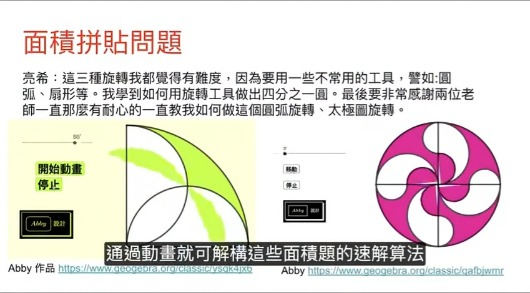

自己動手做實驗 vs. 看影片：有何不同？
●GGB3:適合五年級~七年級初學GGB學生/家長參加
授課老師：朱安強老師
12/21 (六) PM 4:00~5:00
許多家長在孩子開始學習 Geogebra 課程時，常常會有這樣的疑問：既然紙筆測驗不考實作，學習這個工具是否值得？是否不如直接記憶結論更省時？
有個效應叫「解釋深度錯覺」是你以為你理解的東西，其實往往你並不真的理解：只要讓你稍微多解釋一步你就露餡了。
實際上，關鍵在於動手探究所獲得的不僅僅是結論，更重要的是建立起思維脈絡，讓你關注更多細節。例如，要繪製一個固定周長的平行四邊形，孩子需要整合多種數學概念，如變數、座標和平行等，這些都是在實際操作中逐步培養起來的。
如果孩子對幾何或代數還缺乏直覺感，Geogebra 或許是一個極佳的工具，能夠幫助他們構建對數學的感知與理解。
目前，Geogebra 大班課已經邁向第八期，歡迎大家一起來欣賞過往學生的作品與心得，並加入這今天 12/21 PM 4:00~5:00 的輕體驗課程。讓孩子在動手實驗中，愛上數學！
影片詳見以下臉書連結：
https://www.facebook.com/share/v/1EWmjernKy/
